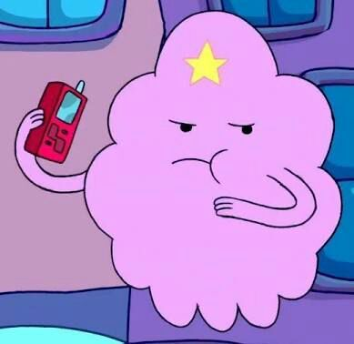

SINOPSIS
La serie sigue las aventuras de Finn, un niño (va creciendo con la serie desde los 12 al principio hasta los 17 a la actualidad), y Jake, un perro con poderes mágicos con los que puede cambiar de forma, crecer y encoger a voluntad, que habitan en la post-apocalíptica Tierra de Ooo.

Personajes
Finn y Jake interactúan con los personajes principales, incluida:
- La Dulce Princesa, la soberana del Dulce Reino y una chicle sensible
- el Rey Helado, un mago de hielo amenazante pero en gran parte incomprendido
- Marceline reina vampiro y entusiasta de la música rock
- Princesa Grumosa, una princesa melodramática e inmadura hecha de grumos

- BMO, un robot inteligente con forma de consola de videojuegos que vive con Finn y Jake

- y Princesa Flama, una elemental de llamas y gobernante del Reino del Fuego.
La enseñanza que nos deja esta serie fue el de aceptar nuestras vida y apreciarlas, en especial ya que existen en algún lugar en el mundo (o en otra dimensión) alguien con una vida más dura. Recomiendo esta serie a todos, ya sean niños, adolescentes o adultos, ya que es diversion asegurada junto algunas lecciones de vida.